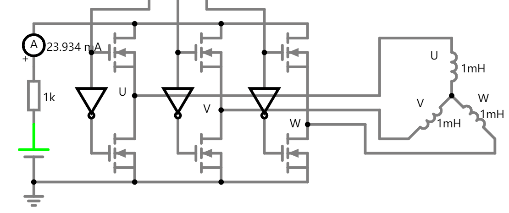

一、三相电基础
1.1 交流发电机与感应电动势
矩形线圈在磁场中以角速度 ω 旋转，设磁通密度为 B（方向为 N 极指向 S 极）、线圈面积为 S。t = 0 时刻线圈平面与中性面的夹角为初相 φ。中性面指线圈平面与磁场方向垂直的位置。
电动势幅值（最大值）：Em = B·S·ω（线圈平面转至与 B 平行、磁通变化率最大时取得；cosφ 项在推导中体现为 sin，故幅值不含 cosφ）。
其中角频率 ω = 2πf = 2π·n/60（n 为发电机转速 RPM，一对极）。例如工频 50Hz 对应 3000 RPM。
1.2 推广到三相对称绕组
三相绕组在空间互差 120° 电角度，转子旋转时各相感应电动势依次滞后 120°。以 A 相为参考（正序 A→B→C），三相电压：
UB(t) = Um·sin(ωt + φ − 2π/3) （B 相滞后 A 相 120°）
UC(t) = Um·sin(ωt + φ + 2π/3) （C 相超前 A 相 120°）
任意时刻三相瞬时值之和为零：uA + uB + uC = 0，波形"此起彼伏"。
1.3 从电动势到电流：回路中的感应电流
1.1 节推导了感应电动势 e = Emsin(ωt + φ)，但电动势只是"推动电荷的能力"——实际流过多少电流，取决于回路阻抗。好比水压（电动势）与水管阻力（阻抗）共同决定水流量（电流）。
RL 回路（如电机绕组）：I = E / Z，Z = √(R² + (ωL)²)
电流滞后角：φ = arctan(ωL / R) （电感使电流滞后于电动势）
电机绕组（Rs + Ls）正是典型的 RL 回路——电流滞后于电动势 φ 角，这与第二节"电机模型"中的电气回路直接对应。
1.4 载流导体在磁场中的力：安培力
感应出电流后，这股电流在磁场中会受到力——这就是安培力，也是电动机产生转矩的物理根源。
矢量形式：F = IL × B （叉积，方向垂直于 I 和 B 所构成的平面）
B——磁感应强度(T)，I——电流(A)，L——导体长度(m)，θ——I 与 B 的夹角
力的方向由左手定则判断（电动机定则）：四指指向电流方向 I，磁力线 B 穿过掌心，拇指所指即为受力方向 F。力始终垂直于电流与磁场所在的平面。
1.5 从力到力矩：线圈如何转起来
单根导体受力只能平移，但将导体绕成矩形线圈后，两侧边受到方向相反的安培力，形成力偶——这就是转矩的来源。
N 匝线圈转矩：τ = N · B · I · A · sin(θ)
A——线圈面积(m²)，θ——线圈法线与 B 的夹角
注意角度的对应关系：
- θ = 0°（线圈平面⊥B，即中性面）：磁通最大、变化率为零 → 电动势为零；同时电流方向与 B 平行 → 力矩为零
- θ = 90°（线圈平面∥B）：磁通为零、变化率最大 → 电动势最大；同时电流方向与 B 垂直 → 力矩最大
电动势和力矩都正比于 sin(θ)——这不是巧合，而是法拉第定律和安培力定律同源于洛伦兹力的必然结果。
二、电机模型
电机模型分为电气模型与机械模型两部分：电气侧由母线电压源 V_bus、相电阻 R_s、相电感 L_s 及反电动势源 E 构成闭环回路，产生电流 I_max；反电动势常数 K_e 是电气与机械的耦合参数（E = K_e·n），将机械转速反馈到电气侧。机械侧转子受摩擦与阻尼制约，输出最大转速。
04-资料/yuntai2804.json 对应：R_s→rs、L_s→ls、K_e→BEmfConstant、最大转速→maxRatedSpeed、摩擦系数→friction。
三、从 RLC 基础到电机等效电路
先吃透纯电阻、电感、RLC 基础公式与物理意义，再一步步套入电机绕组模型，最后引出反电动势——全程只讲时域基础公式，避开复杂矩阵。
3.1 基础元件伏安关系（最核心三式）
电压与电流的瞬时关系，是所有电路的根基。
电阻 R — 电流流过电阻产生压降，电能全部变成热量消耗掉，无储能。电压、电流同相位。
电感 L（电机绕组最关键元件）— 电感阻碍电流变化，电流变化越快，感应电压越大。
物理含义：
- 电流不变（直流稳态）：di/dt = 0，电感两端电压 = 0，相当于导线
- 电流快速波动 / 交流：电感产生反向电压阻碍电流变化
- 储存磁场能量：W = ½Li²
电容 C（电机里极少用到，仅滤波用）— 电压变化才有电流，储存电场能。电机绕组本体不含电容，后续仅滤波电路会遇见。
3.2 串联电路公式
RL 串联电路（电机绕组最基础等效单元）— 电阻 + 电感串联，总电压等于两元件电压之和：
这就是电机单相绕组最原始的电压方程。两种工况理解：
- 直流稳态：di/dt = 0 → u = Ri，只剩电阻压降
- 交流 / 快速变化：电感分压显现，电压超前电流
RLC 串联（电机本体不用，外围滤波电路）— KVL 电压平衡方程（电流 i 串联流过各元件，u 为总电压）：
3.3 正弦交流下的阻抗形式（简化计算）
通入正弦交流电时，可以用阻抗代替微分运算：
电感感抗：XL = ωL
RL 串联总阻抗：Z = √(R² + (ωL)²)
其中 ω = 2πf，转速越快 → 电机电频率 f 越高 → 感抗越大——高频下电感"堵住"电流。
3.4 引入关键：反电动势 E（电机独有的电压源）
普通 RL 电路只有外部供电电压；旋转的电机绕组切割磁场，会自己生出一个反向电压——反电动势 E。
等效理解：绕组 RL 串联回路里，多了一个反向电压源 E。电压平衡定律：
外加电压 = 电阻压降 + 电感压降 + 反电动势
各项拆解：Ri — 铜线发热损耗压降；L·di/dt — 电流波动的电感压降；E — 转子永磁体旋转产生的感应电压，方向与供电电压相反。
反电动势规律：转速越快，切割磁感线越快，反电动势越大。
ke：反电动势常数（出厂固定参数）；ω：转子电角速度
这与图 5 电机模型中 E = Ke·n 一致——n 为机械转速，ω 为电角速度，差一个极对数。
3.5 BLDC 与 PMSM 等效电路
1. BLDC 无刷直流电机（梯形波反电动势）— 三相星形连接，每相满足：
uB = RsiB + Ls·diB/dt + EB
uC = RsiC + Ls·diC/dt + EC
特点：EA、EB、EC 为梯形波；六步换向时总有一相不通电（i = 0）。
悬空相简化：i = 0，di/dt = 0 → u悬空相 = E悬空相 — 不通电相的端电压就等于反电动势，这就是 BLDC 无感检测原理。
2. PMSM 永磁同步电机（正弦反电动势，FOC）— 三相始终有电流，没有悬空相，无法直接测 E。沿用 u = Ri + L·di/dt + E，通过坐标变换到 α-β 静止坐标系，依靠电流、电压采样反算 E——即观测器。
3.6 低速为什么测不到反电动势？
电机刚启动转速极低：ω ≈ 0 → E ≈ 0，公式简化为：
反电动势幅值太小，淹没在噪声中，无法分辨——必须开环拉起转速，等 E 足够大后再切换闭环。这就是无传感器电机启动时需要"开环强拖"阶段的原因。
3.7 外围 RC 滤波电路（采样端 RLC 应用）
采集电机端电压时，逆变器 PWM 高频开关噪声很大，需加 RC 低通滤波（电阻 + 电容串联）滤除高频毛刺：
作用：平滑电压波形，避免反电动势过零点误检测——这就是 RLC 在电机采样里的实际用处。
3.8 补充推导：电流幅值 Im 与电压幅值 Um 从何而来？
第一步：明确稳态运行时各量都是正弦波
电机稳态运行（转速恒定）时，外加电压、电流、反电动势都是同一频率 ω 的正弦波：
反电动势：E(t) = Em·sin(ωt) （Em = ke·ω，与转速成正比）
电流：i(t) = Im·sin(ωt − φ) ← 这就是待求量！
其中 φ 是电流滞后电压的角度——因为绕组有电感 L，电流不能瞬间跟上电压。现在的问题变成：已知 Um、Em、R、L、ω，怎么求 Im 和 φ？
第二步：用相量法把微分方程变成代数方程
3.4 节的电机方程 u = R·i + L·di/dt + E 里有一个微分项 di/dt，直接解微分方程比较麻烦。相量法的核心技巧是：正弦量的微分等价于乘以 jω。下面把这个变换拆开讲透。
从时域出发，一步步算。假设电流是正弦函数：
对时间求导（基本求导公式 d/dt[sin(ωt+φ)] = ω·cos(ωt+φ)）：
利用三角恒等式 cosθ = sin(θ + 90°)，改写成正弦形式：
对比原来的 i(t)，发生了两件事：
- 幅值 ×ω：从 Im 变成了 ω·Im
- 相位 +90°：整个波形往左移了 1/4 周期（超前 90°）
翻译成相量语言：相量 Ī 代表的就是幅值 Im、相位 φ。微分后的结果——幅值乘 ω、相位加 90°。在复数里，乘以 j 就是逆时针旋转 90°（因为 j = ej·90°），所以"幅值×ω 且 相位+90°"等价于"乘以 jω"：
一句话记忆：正弦函数求导 → 幅值乘 ω、相位超前 90° → 相量法里就是乘 jω。
有了这个工具，整个电机方程变成纯代数运算——不再有微分：
相量电压 = 电阻压降 + 电感压降 + 反电动势
把含 Ī 的项合并：
这里 Z = R + jωL 就是 3.3 节讲过的阻抗，它的模值和相角为：
φ = arctan(ωL / R) （阻抗角 = 电流滞后角）
上面直接写了"阻抗角 = arctan(ωL/R)"，但这个角度为什么恰好就是电流滞后电压的角度？下面用三种方法从不同角度证明，殊途同归。
方法一：复数法（从阻抗辐角直接得到）
阻抗 Z = R + jωL 是一个复数。任何复数 a + jb 都可以写成极坐标形式 |Z|∠θ，其中：
辐角：θ = arctan(虚部 / 实部) = arctan(b / a)
代入 RL 阻抗 a = R，b = ωL：
关键定义：串联电路中电流处处相同，以电流为参考基准（相位 0°）。电阻电压与电流同相，电感电压超前电流 90°，总电压 = 两者的矢量和——总电压超前电流的角度恰好等于阻抗角 θ。而"电流滞后电压" = "电压超前电流"，所以：
方法二：几何法（阻抗三角形）
把 R、XL = ωL、|Z| 拼成一个直角三角形——这就是 3.8 节图 16 右下角画的小三角形：
邻边是 R（电阻，与电流同相），对边是 ωL（感抗，超前 90°），夹角 φ 的正切值 = 对边/邻边：
方法三：时域推演法（从基本元件公式严格证明）
设回路电流 i(t) = Im·sin(ωt)（以电流为参考，相位设为 0°），分别求电阻和电感的电压：
电感电压：uL = L·di/dt = L·Im·ω·cos(ωt) = Im·ωL·sin(ωt + 90°) （超前电流 90°）
总电压 = uR + uL（两个同频率正弦量相加）。两个相位差 90° 的正弦量叠加，幅值用勾股定理，相位用正切：
相位：tan(φ) = ULm / URm = (Im·ωL) / (Im·R) = ωL / R
Im 在分子分母中约掉，最终：
| 复数法 | 从复阻抗 Z = R + jωL 的辐角直接得到 |
| 几何法 | 阻抗三角形中 tan(φ) = 对边/邻边 |
| 时域法 | 从 uR = Ri 和 uL = L·di/dt 出发严格推演 |
物理本质：电感的储能特性使电流"来不及"跟上电压——电感越大（ωL↑）、电阻越小（R↓），滞后角 φ 越大。极端情况：纯电感 R→0 时 φ→90°，纯电阻 L→0 时 φ→0°。
第三步：解出电流幅值 Im
从 Ũ − Ẽ = Z·Ī 直接解出电流：
取模值（幅值 = 向量长度），就得到电流幅值：
（稳态运行时 Um > Em，所以可以直接去掉绝对值。）电流滞后角 φ = arctan(ωL/R)，由电阻和电感的比例决定。
第四步：反过来——已知电流求电压幅值 Um
工程中更常见的场景是：FOC 控制器需要输出某个目标电流 Im，反推需要多大的电压 Um。从 Ũ = Ẽ + Z·Ī 展开：
这三项的矢量关系（相量图）如下——记住这个图，比记公式管用：
从相量图可以直观看出，Um 是三个分量的矢量合成（不是简单相加！）：
水平方向：Em + R·Im（反电动势 + 电阻压降，都与电流同相）；垂直方向：ωL·Im（电感压降，超前 90°）。用勾股定理合成就是 Um。
第五步：物理意义——三个关键工况
转速为零 → Em = ke·ω ≈ 0，公式简化为：
转速上升 → Em 增大 → (Um − Em) 减小 → Im 下降。这就是电机的自然限速：转速越高，反电动势越大，"净电压"越小，电流自然减小，转矩也随之下降——直到转矩与负载平衡，转速稳定。1.3 节提到的"电机自然限速原理"就是这个数学过程。
FOC 的核心就是主动控制 Im（在 dq 坐标系中体现为 iq）：速度环 PI 输出目标电流 → 电流环 PI 调节电压 → 逆变器改变 Um → 实际电流 Im 跟随目标值。本节公式 Um = √((Em + R·Im)² + (ωL·Im)²) 就是前馈补偿的数学基础——已知目标 Im 和当前转速对应的 Em，可以直接算出需要的电压，加快电流响应。
四、Clarke 与 Park 坐标变换
第五节 STO+PLL 观测器输出转子角度 θ̂ 后，需要用它做 Park 变换——而 Park 变换的输入来自 Clarke 变换。本节从手写笔记的坐标系图形入手（图形记忆比公式记忆更牢），再手把手推导矩阵如何与第一节的三相电公式联立。
4.1 三个坐标系的关系（先看图，后记公式）
电机控制中有三套坐标系，记住它们的图形关系就够了：
4.2 Clarke 变换：从三相电公式推导矩阵（手把手）
回忆第一节 1.2 节的三相电流公式——三相绕组在空间互差 120°，电流随时间正弦变化：
ib = Im·sin(ωt − 120°)
ic = Im·sin(ωt + 120°)
其中 Im 是电流幅值——它的推导见 3.8 节：由电机方程 u = R·i + L·di/dt + E 经相量法化简得 Im = (Um − Em) / √(R² + (ωL)²)，即外加电压减去反电动势的"净电压"除以绕组阻抗。FOC 控制器的核心任务就是调节这个 Im。
现在要做的事：把三个互差 120° 的轴上的量，投影到正交的 α-β 坐标系上。α 轴与 ia 轴重合（这是约定），β 轴垂直于 α 轴。
第一步：画出投影关系
第二步：把每个相投影到 α 轴和 β 轴
矢量的投影 = 矢量幅值 × cos(角度差)。ia 与 α 轴夹角 0°，ib 夹角 120°，ic 夹角 240°（即 −120°）。
iα = ia·cos(0°) + ib·cos(120°) + ic·cos(240°)
↑ i_a 完全在 α 上 ↑ i_b 投到 α 上 ↑ i_c 投到 α 上
代入三角函数值：cos(0°) = 1，cos(120°) = −1/2，cos(240°) = −1/2
iβ = ia·sin(0°) + ib·sin(120°) + ic·sin(240°)
代入：sin(0°) = 0，sin(120°) = √3/2，sin(240°) = −√3/2
第三步：写成矩阵形式
│i_α│ │ 1 −1/2 −1/2 │ │i_a│
│i_β│ = │ 0 √3/2 −√3/2│ │i_b│
└ ┘ └ ┘ │i_c│
└ ┘
这个矩阵就是手写笔记中的系数表格——行是 α、β 轴，列是 a、b、c 相，每个格子就是对应相在该轴上的投影系数。
第四步：验证——代入三相正弦电流看结果
把第一节的三相电流公式代入 iα：
利用三角恒等式 sin(A−120°) + sin(A+120°) = −sin(A)（两个差 120° 的正弦之和），化简：
同理可得 iβ = 3/2·Im·(−cos(ωt))。结果是幅值变成了原来的 3/2 倍——这就是"等幅值变换"需要补一个 2/3 系数的原因。在 MCSDK 工程代码中，这个系数已经包含在定点运算的缩放因子里。
mc_math.c 中实现，采用定点数格式。
4.3 Park 变换：从旋转投影推导矩阵（手把手）
Clarke 变换后得到 iα、iβ——它们仍然是交流量（随时间正弦变化）。Park 变换的目的是把坐标系转起来，跟着转子一起转，这样在旋转坐标系里看到的量就是直流。
第一步：理解旋转坐标系
第二步：推导投影公式
d 轴与 α 轴夹角为 θ。把 iα、iβ 投影到 d 轴和 q 轴上，本质是一个坐标旋转：
id = iα·cos(θ) + iβ·sin(θ)
为什么？iα 在 d 轴上的投影 = iα·cos(θ)（θ 是两轴夹角）；iβ 与 d 轴的夹角是 (90°−θ)，投影 = iβ·cos(90°−θ) = iβ·sin(θ)。两者相加。
iq = −iα·sin(θ) + iβ·cos(θ)
iα 在 q 轴上的投影 = iα·cos(90°+θ) = −iα·sin(θ)（负号因为 q 轴在 α 的"前方"）；iβ 在 q 轴上的投影 = iβ·cos(θ)。
第三步：写成矩阵形式
│i_d│ │ cosθ sinθ │ │i_α│
│i_q│ = │−sinθ cosθ │ │i_β│
└ ┘ └ ┘ └ ┘
第四步：为什么 Park 变换后交流变直流？
将 Clarke 变换的结果 iα = 3/2·Im·sin(ωt)、iβ = −3/2·Im·cos(ωt) 代入 Park 变换，并令 θ = ωt（转子以电角速度 ω 旋转，电角度 = ωt）：
iq = −(3/2)Imsin(ωt)·sin(ωt) + (−3/2)Imcos(ωt)·cos(ωt) = −3/2·Im
结果：id = 0，iq = 常数——交流量变成了直流量！这就是 FOC 能用普通 PI 调节器控制交流电机的根本原因。
4.4 矩阵与三相电公式的完整联立推导（手把手）
4.2 和 4.3 分别推导了 Clarke 和 Park 矩阵，并做了简要验证。但验证中跳过了关键步骤——三角恒等式为什么成立、展开后各项如何抵消。本节把三相正弦公式 → Clarke 矩阵 → αβ 结果 → Park 矩阵 → dq 直流结果整条链路联立推导，每一步代数运算都不省略。
第一步：先准备工具——三角恒等式的证明
推导中要用到四个三角工具，这里先证明一遍，后面直接引用。
工具 ① 和角公式（展开 sin(A±B)，高中基本公式）：
sin(A − B) = sinA·cosB − cosA·sinB
工具 ② 两式加减（把工具 ① 两行相加/相减，消去一侧）：
相减：sin(A−B) − sin(A+B) = −2·cosA·sinB ← sinB 项保留，cosB 项一加一减抵消
工具 ③ 代入 B = 120°（cos120° = −1/2，sin120° = √3/2）：
sin(A−120°) − sin(A+120°) = −2·cosA·(√3/2) = −√3·cosA
这两个结果就是 4.2 节第四步中"直接引用"的恒等式——现在你知道它们怎么来的了。关键是：两个差 120° 的正弦相加，cos 项抵消、sin 项叠加为原来的 −1 倍。
工具 ④ 平方和：
第二步：用和角公式展开三相电流
第一节的三个电流公式（令 A = ωt, B = 120°）：
ib = Im·sin(ωt − 120°)
ic = Im·sin(ωt + 120°)
用工具 ①展开 ib 和 ic：
= Im·[−½·sin(ωt) − √3/2·cos(ωt)]
ic = Im·[sin(ωt)·cos(120°) + cos(ωt)·sin(120°)]
= Im·[−½·sin(ωt) + √3/2·cos(ωt)]
第三步：代入 Clarke 矩阵第一行，逐项展开求 i_α
Clarke 矩阵第一行：iα = 1·ia + (−½)·ib + (−½)·ic
把第二步展开的三个电流代入，每一项都标出来：
− ½·Im·[−½·sin(ωt) − √3/2·cos(ωt)] ← 来自 i_b（系数 −½）
− ½·Im·[−½·sin(ωt) + √3/2·cos(ωt)] ← 来自 i_c（系数 −½）
展开三个括号（注意 −½ 乘进去时负号的变化）：
+ ¼·Im·sin(ωt) + √3/4·Im·cos(ωt) ← −½ × (−½) = +¼；−½ × (−√3/2) = +√3/4
+ ¼·Im·sin(ωt) − √3/4·Im·cos(ωt) ← −½ × (−½) = +¼；−½ × (+√3/2) = −√3/4
合并同类项——注意 cos(ωt) 项一正一负，完全抵消：
= (1 + ¼ + ¼)·Im·sin(ωt)
= 3/2 · Im · sin(ωt) ← 还是正弦，但幅值变成 3/2 倍
第四步：代入 Clarke 矩阵第二行，逐项展开求 i_β
Clarke 矩阵第二行：iβ = 0·ia + (√3/2)·ib + (−√3/2)·ic = (√3/2)·(ib − ic)
先算 ib − ic（用第二步的展开式）：
= Im·[−½·sin(ωt) − √3/2·cos(ωt) + ½·sin(ωt) − √3/2·cos(ωt)]
= Im·[−√3·cos(ωt)] ← sin 项一加一减抵消，cos 项叠加
乘以 √3/2：
第五步：代入 Park 矩阵第一行，逐项展开求 i_d
令 θ = ωt（转子电角度与电流同步旋转）。Park 矩阵第一行：id = cos(θ)·iα + sin(θ)·iβ
把第三、四步的结果代入：
= (3/2)·Im·sin(ωt)·cos(ωt) − (3/2)·Im·cos(ωt)·sin(ωt)
两项完全相同（sin·cos = cos·sin，乘法交换律），相减为零：
第六步：代入 Park 矩阵第二行，逐项展开求 i_q
Park 矩阵第二行：iq = −sin(θ)·iα + cos(θ)·iβ
= −(3/2)·Im·sin²(ωt) − (3/2)·Im·cos²(ωt)
提取公因式 −(3/2)·Im，用工具 ④（sin²θ + cos²θ = 1）：
第七步：波形可视化——看交流如何变成直流
4.5 反变换：从 dq 回到 abc（简要）
FOC 控制流程中，PI 调节器输出 dq 电压参考后，需要反向变换回 abc 去驱动 SVPWM：
iα = id·cos(θ) − iq·sin(θ)
iβ = id·sin(θ) + iq·cos(θ)
逆 Clarke（αβ → abc）：
ia = iα
ib = −½·iα + √3/2·iβ
ic = −½·iα − √3/2·iβ
逆变换就是矩阵求逆——Park 矩阵是正交矩阵，逆 = 转置；Clarke 矩阵的逆需要用伪逆（因为 3→2 降维不可逆，需补零序分量 i0 = (ia+ib+ic)/3 才能完全还原）。
4.6 在 FOC 中的完整位置
将坐标变换放回第五节 STO+PLL 观测器的上下文中，FOC 的完整信号链：
→ Clarke 变换 → iα, iβ
→ STO 观测器输入（估算 Êαβ）
→ PLL 锁出 θ̂
→ Park 变换（用 θ̂）→ id, iq（直流量）
→ PI 电流环 → Vd*, Vq*
→ 逆 Park → Vα*, Vβ*
→ 逆 Clarke / SVPWM → Va, Vb, Vc → 逆变器 → 电机
五、STO+PLL 无感观测器原理
第三节讲到 PMSM 没有悬空相，无法直接测量反电动势 E，需要用观测器反算。本工程（MCSDK v6.4.2）使用的是 STO + PLL（State Observer + Phase-Locked Loop，状态观测器 + 锁相环），代码位于 sto_pll_speed_pos_fdbk.c，配置在 mc_config.c 的 STO_PLL_M1 结构体。
5.1 为什么需要观测器？
回顾第三节的本源公式（α-β 静止坐标系下，单相形式）：
uβ = R·iβ + L·diβ/dt + Eβ
已知量：电压 u（由占空比 × Vbus 计算）、电流 i（ADC 采样）、R 和 L（电机参数）。未知量：反电动势 E。如果能算出 Eα、Eβ，就能反推转子角度——因为 E 的方向始终与转子磁极方向正交。
但公式里有微分项 di/dt，直接微分运算对噪声极其敏感。STO 的思路是：不直接求 E，而是建一个"影子电机"模型，让它自己跑，用误差反馈修正。
5.2 状态观测器（STO）核心思想
STO 本质是一个 Luenberger 观测器——在软件中复制一份电机模型，用真实电流与估算电流的偏差做负反馈修正。
5.3 观测器数学模型（对应代码 STO_PLL_CalcElAngle）
观测器在 α-β 坐标系下对每轴独立建模（以 α 轴为例，β 轴完全对称）。将连续微分方程离散化后，每个 PWM 周期执行一次迭代：
第一步：计算电流误差（代码第 225-239 行）
这个误差反映了模型与真实电机的偏差——如果估算反电动势 Êα 不准，估算电流 îα 就会偏离实测值。
第二步：更新估算电流（代码第 257-274 行）
各项含义：
- −C1·îα：电阻衰减项，对应 R/L·Δt，电流自然衰减
- +C2·Δiα：误差反馈修正项（Luenberger 增益 K1），把模型拉回真实值
- +C5·uα：外加电压驱动项，对应 (1/L)·u·Δt
- −C3·Êα：反电动势耦合项，对应 (1/L)·E·Δt
第三步：更新估算反电动势（代码第 276-287 行）
各项含义：
- +C4·Δiα：误差积分项（Luenberger 增益 K2），缓慢修正反电动势估计
- +C6·ω̂·Êβ：交叉耦合项——α 轴反电动势的变化受 β 轴反电动势和转速影响（因为 Eαβ 是旋转矢量）
5.4 PLL 锁相环（对应代码 STO_ExecutePLL）
观测器输出估算反电动势 Êα、Êβ，这是一个旋转矢量，幅值 ∝ 转速，方向与转子磁极正交。PLL 从中提取角度和转速。
PLL 核心原理：用估算角度 θ̂ 的 sin/cos 与 Ê 做叉乘，得到角度误差信号：
当 θ̂ 完全锁定时，error → 0。这个误差信号送入 PI 调节器，输出估算电角速度 ω̂：
θ̂(k+1) = θ̂(k) + ω̂ （角度积分）
5.5 工程参数对应（本工程实际值）
观测器的所有参数由 MC Workbench 根据电机参数自动计算，定义在 drive_parameters.h 和 parameters_conversion.h：
| 参数 | 宏定义 | 值 | 含义 |
|---|---|---|---|
| C1 | C1 |
F1·Rs / (Ls·fFOC) | 电阻衰减系数，对应 R/L·Δt |
| C2 (K1) | GAIN1 |
-21509 | 电流误差反馈增益（负值表示修正方向） |
| C3 | C3 |
F1·Emax / (Ls·Imax·fFOC) | 反电动势归一化系数 |
| C4 (K2) | GAIN2 |
26133 | 反电动势误差积分增益 |
| C5 | C5 |
F1·Vmax / (Ls·Imax·fFOC) | 电压归一化系数 |
| F1 | F1 |
16384 | 定点缩放因子（214，用位移代替除法） |
| F2 | F2 |
8192 | 反电动势定点缩放因子（213） |
| PLL Kp | PLL_KP_GAIN |
582 | 锁相环比例增益 |
| PLL Ki | PLL_KI_GAIN |
26 | 锁相环积分增益 |
| FIFO 深度 | STO_FIFO_DEPTH |
64 | 速度平均窗口（64 个采样点求平均） |
| 方差阈值 | VARIANCE_THRESHOLD |
0.25 (25%) | 速度估计方差超过 25% 判定不可靠 |
| 最低观测转速 | OBS_MINIMUM_SPEED_RPM |
901 RPM | 低于此转速认为 E 太小，观测器不可靠 |
>> 14（右移 14 位）代替除以 16384，大幅提升运算速度。代码中大量 #ifndef FULL_MISRA_C_COMPLIANCY 分支就是做这件事——非 MISRA 模式用位移，MISRA 模式用除法。
5.6 观测器在 FOC 系统中的调用流程
观测器运行在两个频率上，与第二节中断驱动机制对应：
5.7 启动收敛与可靠性检查
结合第三节"低速测不到反电动势"的结论，观测器在低速时无法工作，因此需要开环启动流程：
启动阶段（START 状态）：虚拟速度传感器（VSS）按预设曲线强制拖动电机，同时观测器并行运行。代码中 STO_PLL_IsObserverConverged 检查四个条件是否同时满足：
- 速度方差合格：
IsSpeedReliable——64 点速度方差 < 25% - 速度方向一致：估算速度与强制速度同号
- 速度幅值足够：|估算转速| >
OBS_MINIMUM_SPEED_RPM（901 RPM） - 速度接近预期：估算值在强制速度的 [15/16, 17/16] 区间内
以上条件需连续满足 NB_CONSECUTIVE_TESTS（2）次，才判定观测器收敛，进入 SWITCH_OVER 过渡阶段。
反电动势一致性检查（BEMF Consistency）：额外的双重验证——比较观测器输出的反电动势幅值与根据转速估算的期望反电动势幅值是否匹配。因为 E = Ke·ω，如果观测到的 Ê 与转速对应的 E 相差太大，说明估算有误。
六、FOC 控制系统框图与三相逆变器
前面五节分别拆解了 FOC 的各个组成部分：电机模型（第二节）、等效电路（第三节）、坐标变换（第四节）和无感观测器（第五节）。本节将它们"拼装"成完整的控制系统，并下沉到硬件层——三相逆变器的电路拓扑和开关控制原理。
6.1 FOC 控制系统总体架构
FOC（Field-Oriented Control，磁场定向控制）的核心思想是：通过坐标变换将三相交流量"翻译"成直流量，然后用普通 PI 调节器控制——就像控制直流电机一样简单。完整的 FOC 系统由双闭环（速度环 + 电流环）、坐标变换（Clarke/Park 及其逆变换）、SVPWM 调制和三相逆变器四大部分组成 [$TRAE_REF](https://blog.csdn.net/ybhuangfugui/article/details/159556464)。
对照框图，信号流可以概括为两条通道：
- 前向通道（控制指令 → 电机）：ω* → 速度 PI → iq* → 电流 PI → ud*, uq* → 逆 Park → uαβ* → SVPWM → PWM → 逆变器 → 电机
- 反馈通道（电机 → 控制器）：电机 → 电流采样 → Clarke → Park → id, iq → 电流 PI；观测器 → θ̂（供给 Park 和逆 Park）、ω̂（供给速度 PI）
6.2 双闭环控制策略
FOC 采用串级控制（Cascaded Control）结构——速度环嵌套电流环，电流环嵌套在速度环内部。两个环的分工明确：
| 控制环 | 输入 | 输出 | 频率 | 代码对应 |
|---|---|---|---|---|
| 速度环（外环） | ω* − ω̂ | iq*（转矩电流参考） | 1 kHz | PIDSpeedHandle_M1 |
| 电流环（内环） | id*−id, iq*−iq | ud*, uq*（电压参考） | 16 kHz | PIDIdHandle_M1, PIDIqHandle_M1 |
为什么内环要比外环快？这是串级控制的基本设计原则——内环必须能够"即时"响应外环的指令。如果电流环（16 kHz）比速度环（1 kHz）快约 16 倍，从速度环的视角看，电流环几乎是"无延迟"的 [$TRAE_REF](https://www.qeios.com/read/RY37U1)。反之，如果两个环速度接近，就会产生振荡。
id*=0 控制：对于表贴式 PMSM（SPMSM），转矩公式 Te = 3/2·p·ψf·iq（第四节 4.2 节推导），转矩只与 iq 成正比，id 对转矩无贡献。因此设 id*=0，让全部电流都用于产生转矩，效率最高。本工程的 2804 云台电机就是 SPMSM。
SpeednTorqCtrl_ExecSpeedRamp，输出 iq*；电流环在高频中断（16 kHz）中执行 FOC_CurrControllerM1，读取 id*（=0）和 iq*，输出 ud*、uq*。两个环的频率比对应第五节图 11 的"高频环 + 中频环"结构。
6.3 三相逆变器电路拓扑
SVPWM 输出的三个占空比信号（SA, SB, SC）无法直接驱动电机——它们只是数字量。实际执行"直流变交流"的是三相逆变器（Three-Phase Inverter），它是 FOC 系统从软件到硬件的"最后一公里" [$TRAE_REF](https://www.researchgate.net/publication/366403356_Design_of_a_MOSFET_Circuit_Used_in_FOC_Driver_to_Reduce_the_Loss_and_Improve_the_Efficiency)。

工作原理：逆变器的本质是三个半桥（Half-Bridge）。每个半桥有两个开关管（上管和下管），输出端在两者之间：
- 上管导通、下管关断：输出接 Vdc+，相电压 ≈ +Vdc/2
- 下管导通、上管关断：输出接 Vdc-，相电压 ≈ −Vdc/2
- 交替开关：通过 PWM 控制占空比，输出平均电压可连续调节
例如，A 相上管以 70% 占空比开关，下管以 30% 占空比开关（互补），则 A 相平均输出电压 ≈ 0.7×Vdc − 0.3×Vdc = 0.4×Vdc。三相各自不同的占空比就合成了所需的三相交流电压。
续流二极管：电机绕组是感性负载（第三节 L_s），电流不能突变。当开关管关断时，绕组电流需要一条"续流"路径，否则会产生高压击穿开关管。续流二极管（D1-D6）反并联在每个 MOSFET 两端，为感性电流提供自然续流通道。
死区时间（Dead Time）：同一桥臂的上下管绝不能同时导通（否则 Vdc 直接短路，称为"直通"Shoot-Through）。因此在上下管切换之间插入一段"两个都关"的死区时间（本工程 HW_DEAD_TIME_NS 通常为数百 ns），确保安全。
PWM_Handle_M1 类型为 PWMC_R3_1_Handle_t，每个下桥臂串联一个采样电阻，ADC 在 PWM 周期特定时刻同步采样三相电流。
6.4 SVPWM 与开关控制
SVPWM（Space Vector PWM，空间矢量脉宽调制）是连接控制算法和逆变器的桥梁——它把电流环输出的 uαβ*（两个电压参考值）转换为三个 PWM 占空比（SA, SB, SC）。
基本思想：三个桥臂各有"上通"和"下通"两种状态，三个桥臂组合共 2³ = 8 种开关状态。每种状态在空间中对应一个电压矢量：
- 6 个有效矢量（V1-V6）：对应 6 种非零开关组合，在 αβ 平面上构成正六边形的 6 个顶点
- 2 个零矢量（V0, V7）：全部下管通或全部上管通，输出电压为零
任意方向的电压矢量可以用相邻两个有效矢量 + 零矢量的时间分配来合成——就像用两种颜色混合出第三种颜色。SVPWM 相比正弦 PWM（SPWM）的母线电压利用率高 15.5%（√3/2 ≈ 0.866 vs 1/√2 ≈ 0.707）。
SVPWM 输出三个占空比 d_A, d_B, d_C ∈ [0, 1]
→ CCR_A = d_A × (PWM_PERIOD / 2)
→ CCR_B = d_B × (PWM_PERIOD / 2)
→ CCR_C = d_C × (PWM_PERIOD / 2)
定时器（TIM1）比较这些 CCR 值，自动生成 PWM 方波驱动 MOSFET 门极
6.5 全链路串联——从公式到硬件
至此，FOC 的完整链条已经打通。从物理定律到硬件执行，整条链路可以概括为：
→ 电机方程：u = R·i + L·di/dt + E（第三节 3.4）
→ 电流幅值：Im = (Um − Em) / √(R² + (ωL)²)（第三节 3.8）
→ 坐标变换：abc → αβ → dq（第四节）——把交流"翻译"成直流
→ PI 控制：速度环 + 电流环（本节 6.2）——在 dq 坐标系做直流调节
→ 逆变换：dq → αβ → SVPWM（本节 6.4 + 第四节 4.5）——把控制量"翻译"回交流
→ 逆变器：6×MOSFET 三相桥（本节 6.3）——PWM 开关执行"直流变交流"
→ 电机：三相绕组通入电流 → 产生旋转磁场 → 转子转动
→ 反馈：电流采样 + STO+PLL 观测器（第五节）→ θ̂, ω̂ → 回到坐标变换和速度环
↺ 闭环
七、转写与修正说明
- 本页为手写笔记的电子化转写，文字与公式按原文整理；手绘图以 SVG 矢量图重新绘制，可无限缩放。
- 图 1 修正：按交流发电机标准结构重绘——N/S 磁极、水平磁场 B、线圈绕轴旋转、中性面为垂直于 B 的平面（依据法拉第电磁感应定律，磁通 Φ=BS·cosθ 时 e=−dΦ/dt）。
- 图 2 修正：三相波形改为精确正弦采样绘制，正序 A→B→C 依次达到峰值（90°→210°→330°），B 相滞后 120°、C 相超前 120°。
- 1.3-1.5 节 + 图 3-4 新增（2026-08-11）：基于"感应电流大小与磁场中受力"的问题延伸，补充从电动势→电流→安培力→力矩的完整物理链条。图 3 为安培力示意图，图 4 为线圈力矩示意图。原图 3（电机模型）顺延为图 5，原图 4（RLC）顺延为图 6。
- 图 5 修正：按笔记原图重绘为"电气模型 + 机械模型"结构——左侧 V_bus 电压源 → R_s 电阻 → L_s 电感 → 反电动势源 E 构成闭环回路（电流 I_max、反电动势常数 K_e，E = K_e·n），右侧横向圆柱形电机本体 + 转轴 + 摩擦/阻尼/最大转速参数，K_e 实现机电耦合。修正点：① 补回原图中遗漏的反电动势源 E（圆形电压源符号，位于回路右侧）；② K_e 由"转矩常数"更正为"反电动势常数"；③ 机械模型由椭圆转子改为横向圆柱体 + 转轴；④ 移除原"转矩"箭头，改为 K_e 耦合标注。
- 图 6 修正：电容符号由矩形框改正为两条平行极板的标准符号；各元件压降 u_R、u_L、u_C 已标注。
- RLC 串联公式中积分项补全为 ∫i·dt（原文省略了 i）。
- 第五节 + 图 9-11 新增（2026-08-11）：基于工程代码
sto_pll_speed_pos_fdbk.c和mc_config.c分析，新增 STO+PLL 无感观测器原理章节，涵盖 Luenberger 观测器数学模型、PLL 锁相环原理、工程参数对照表、FOC 系统调用流程、启动收敛与可靠性检查。图 9 为观测器总体结构图，图 10 为 PLL 原理图，图 11 为 FOC 系统执行流程图。 - 第四节 + 图 12-15 新增（2026-08-11）：基于手写笔记电子化，新增 Clarke 与 Park 坐标变换章节。4.1 节以三坐标系全景图（图 12）入门，4.2-4.3 节分别从投影推导 Clarke/Park 矩阵并配投影图（图 13-14）。4.4 节为矩阵与三相电公式的完整联立推导——从三角恒等式证明出发，把三相正弦公式代进矩阵逐行展开，展示 cos 项抵消和 sin²+cos²=1 两个关键抵消点如何把交流"压平"成直流，配三阶段波形可视化图（图 15）。4.5 节为反变换简要说明，4.6 节串联 FOC 完整信号链。
- 3.8 节 + 图 16-17 新增（2026-08-12）：针对"第一、二节未讲透 Im 来源、导致第四节应用时产生困惑"的问题，新增 Im 与 Um 的完整推导。从 3.4 节电机方程 u = R·i + L·di/dt + E 出发，经相量法化简为代数方程 Ũ − Ẽ = Z·Ī，推导出 Im = (Um − Em) / √(R² + (ωL)²) 和 Um = √((Em + R·Im)² + (ωL·Im)²)。第二步补充di/dt → jω·Ī 的完整推导（正弦求导→幅值乘ω、相位+90°→乘jω），并新增 φ = arctan(ωL/R) 的三种证明方法（复数辐角法、阻抗三角形几何法、时域推演法），配相量图（图 16）和阻抗三角形图（图 17）。含启动/稳态/FOC 三工况分析，并在 4.2 节首次使用 Im 处添加指回 3.8 的交叉引用。
- 第四节与第五节调换（2026-08-12）：将 Clarke 与 Park 坐标变换（原第五节）调至第四节，STO+PLL 无感观测器（原第四节）调至第五节，遵循从易到难的顺序。全部小节编号（4.x↔5.x）和跨节交叉引用同步更新。
- 第六节 + 图 18-19 新增（2026-08-12）：新增"FOC 控制系统框图与三相逆变器"章节，将前五节的模块"拼装"为完整 FOC 系统。6.1 节绘制 FOC 控制系统完整框图（图 18），展示双闭环结构、坐标变换、SVPWM、逆变器和反馈路径的全局视图；6.2 节解释串级控制策略（速度环 1kHz + 电流环 16kHz）及 id*=0 控制；6.3 节绘制三相桥式逆变器电路拓扑图（图 19），含 6 个 MOSFET、续流二极管、星形连接电机绕组和电流采样电阻；6.4 节解释 SVPWM 调制原理与开关控制；6.5 节串联从法拉第定律到硬件执行的完整链条。原"转写与修正说明"由第六节顺延为第七节。
- 章节顺序策略调整（2026-08-12）：废除此前"从易到难顺序排列章节"的要求，改为先完整写完笔记打通整个链条，之后再依据旧笔记重新梳理章节顺序。
- 图 19B 新增（2026-08-12）：在 6.3 节原有 PNG 电路截图（图 19）之后，新增同名内容的 SVG 矢量备案版（图 19B）。该 SVG 采用 IGBT 符号绘制六个开关管（A/B/C 三相 × 上/下桥臂），含反并联续流二极管与星形（Y）连接三相电感负载，可直接在 HTML 源码中编辑修改，作为图 19 位图版本的可编辑备选方案。
- 若需修改或增补，直接编辑本 HTML 即可，所有图形均为可编辑的 SVG 代码。每次修改后须在本节追加修订记录，格式为「修改摘要（日期）：详细说明」。